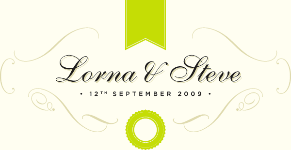

We are getting married at The Longhouse at Mill on the Brue in Bruton, in the heart of rural Somerset. The Mill on the Brue's day job is a children's outdoor activty centre.

Timings for the Day
- People staying at the Longhouse can access their rooms from 11am.
- Ceremony starts at 2pm - we'll ask people to start taking their seats from 1.45pm
- Evening Party starts at 7.30pm
- Bar closes at midnight.
- Carriages/staggering to rooms at 12.30pm
Gifts
Please don’t feel obliged to give us a gift. The biggest gift to us is that you join us to celebrate our wedding day – and of course, that you have fun!
However, if you do feel that you would like to give us a gift, due to the fact that we have everything we need for our home, contributions to our honeymoon that we’re planning in Africa would be very gratefully received and can be made via
our page on the Travel Counsellors website
Accommodation
There are links on the Longhouse website to local B&Bs and also information on how to get there.
Download a PDF of B&B's and Hotels near Bruton
Approximate price per double room (unless otherwise specified)
- The George Hotel
- Castle Cary greenekinginns.co.uk £82 (17 rooms)
- Clanville Manor
- Castle Cary, clanvillemanor.co.uk £35-45 pppn (4 rooms)
- Dolphin Hotel
- Wincanton, BA9 9JF £48 (11 rooms)
- Hunters Lodge Inn
- Wincanton, hunterslodgeinn.com £80 (8 rooms)
- The Bear Inn
- Wincanton BA9 9LP
- The Highwayman Inn
- Shepton Mallet (14 rooms)
- The Thatched Cottage
- Shepton Mallet thatchedcottage.info (8 rooms)
- Bowlish House
- Shepton Mallet bowlishhouse.com £100
- Mendip House Hotel
- Frome £59 (40 Rooms)
- Crossways
- North Wootton, Nr Wells, BA4 4EU £50
- Northover Manor
- Ilchester, Nr Yeovil BA22 8LD northovermanor.com £95 (21 rooms)
- The Walnut Tree Hotel
- West Camel, Nr Yeovil thewalnuttreehotel.com £98 (13 rooms)
Taxis
If you are staying locally and need to arrange for a taxi to take or pick you up from the Longhouse try:
- Castle Cary
- 01963 351 333
- Cary Cabs
- 01963 351 168
- Number Seven Taxis
- 01963 351 015
- Mum's Taxi
- 07711 572 038
- Sable
- 01963 342 66
- West Hill Taxis
- 01963 347 10
Distance and approximate driving time to/from Bruton
- Castle Cary - 4 miles (10 minutes)
- Wincanton – 5 miles (10 minutes)
- Shepton Mallet – 7 miles (16 minutes)
- Frome – 11 miles (20 minutes)
- Wells – 12 miles (27 minutes)
- Glastonbury – 15 miles (28 minutes)
- Yeovil – 16 miles (30 minutes)
Looking forward to seeing you!
We are both really excited about the day and hope everyone has a great time. If you have any questions please email us@lornaandsteve.co.uk